JOTOPA · ETAPA D · 25 DE NOVIEMBRE DE 2026
Todos los recuerdos,
en una conversación.
Capturas reales de Chrome contra Supabase Local, con eventos y personas sintéticos de pruebas. Sin credenciales visibles. La conversación conserva todo el historial aprobado; los nuevos mensajes se incorporan sin reemplazar a los anteriores. Las fotografías y notas de voz reutilizan el almacenamiento privado de la Etapa C.
Modo presentación · 1920 × 1080
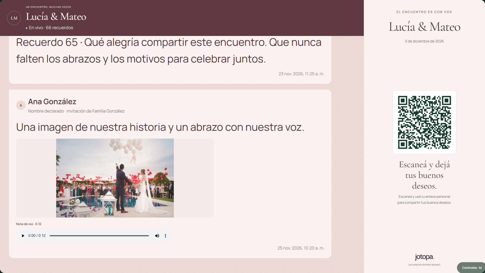
Modo presentación en celular y escritorio

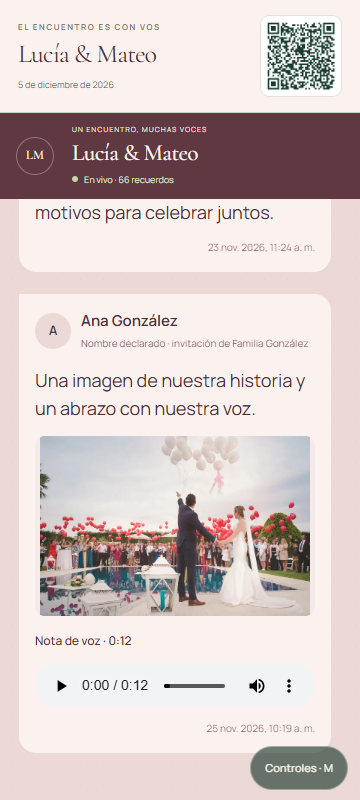

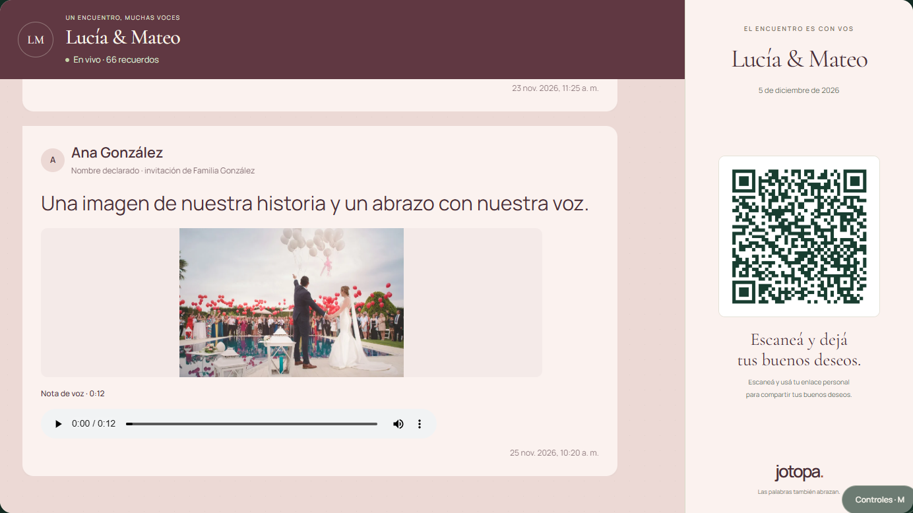
Proyección con fotografía y voz

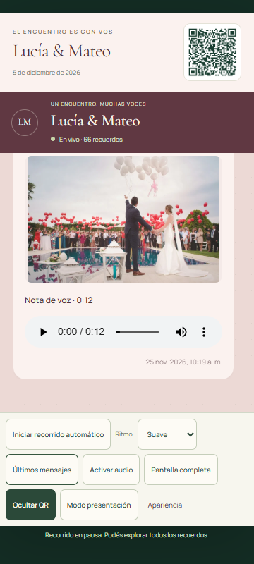

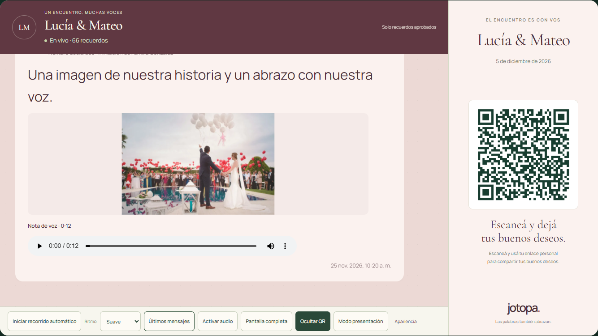
Historial cronológico completo

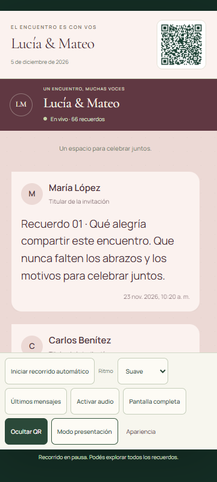

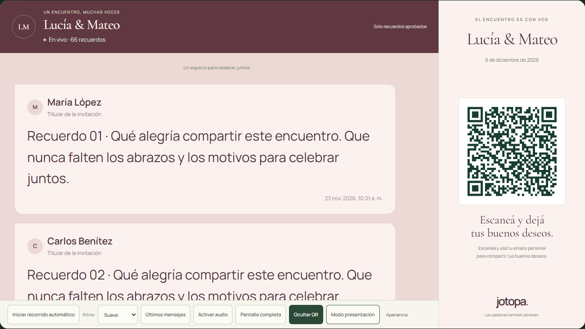
Pantalla de buenos deseos · controles privados

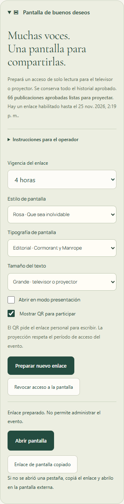

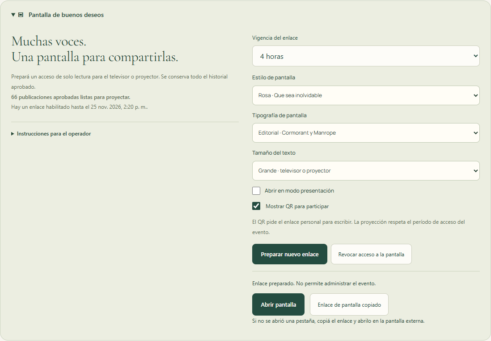
Conversación en la invitación

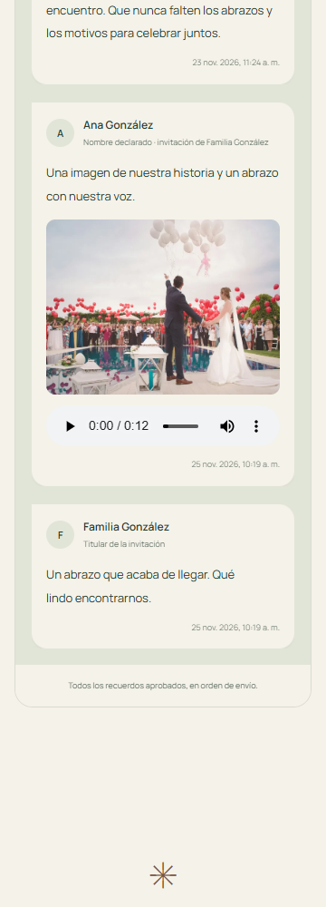

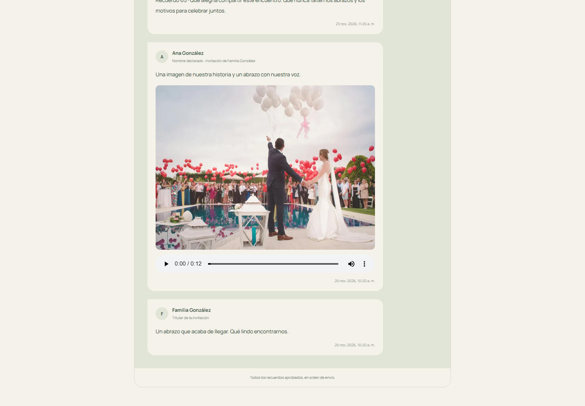
Entrada segura desde el QR

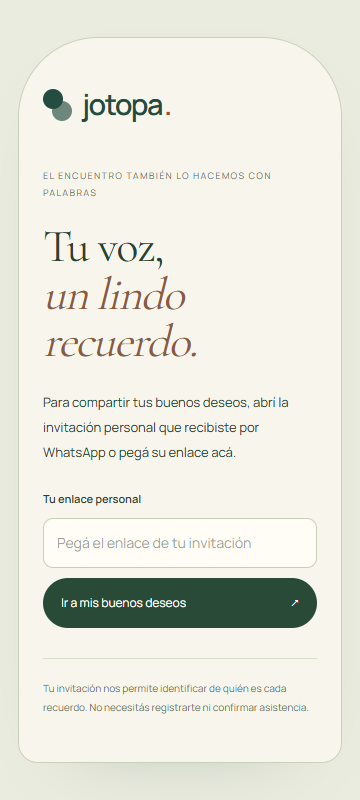

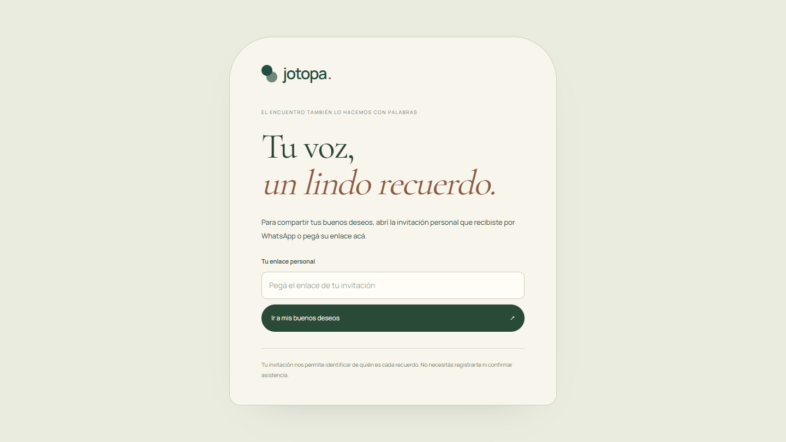
Estado vacío, reconexión y fallos controlados
La galería de pruebas de interfaz aisladas muestra estados complementarios con respuestas simuladas. Esas capturas no certifican permisos, RLS ni Storage real y se mantienen separadas de las capturas anteriores.
El QR abre una entrada que solicita el enlace personal de cada invitado. No contiene tokens personales ni acceso administrativo, y no permite publicar anónimamente. Pendientes externos: televisor/proyector físico, Android/Safari y prueba continua de varias horas. No se realizó ningún despliegue.